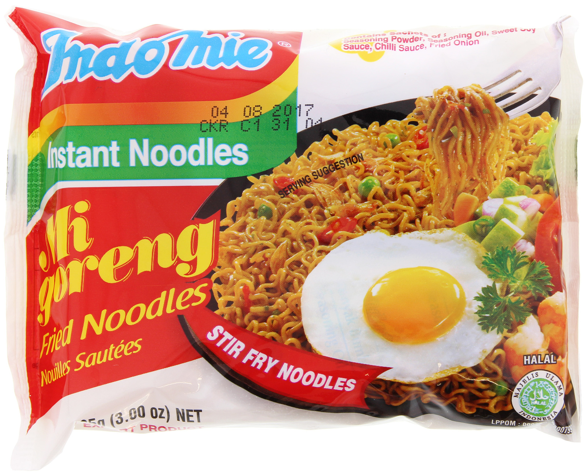
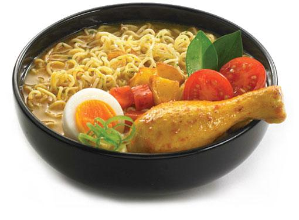

Indomie enak dari Indonesia
Indomie kuah merupakan salah satu varian yang rasanya khusus diambil dari bumbu-bumbu makanan khas Indonesia. Perpaduan antara mi, kuah dan bumbu otentik makanan khas Indonesia menjadikan Indomie kuah makanan yang sangat spesial apalagi bila disajikan dikala cuaca dingin atau hujan

Tapi jika kebanyakan bisa membuat otak anda menjadi autis